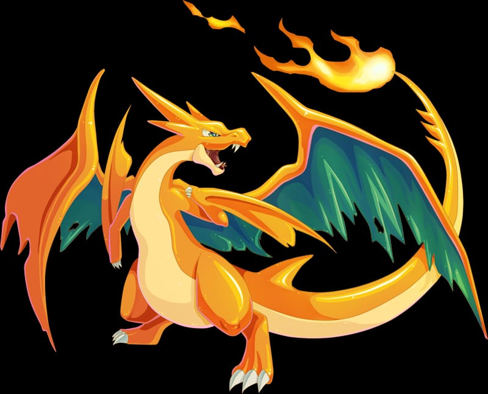

Charizard has two teal wings, with a mostly orange body and back. Its plantigrade feet have the bottom mostly covered by a single pad that is cream-colored like its large belly, while its eyes are light blue in color. When Charizard is Mega Evolved, it can take on one of two forms. Both forms are characterized by white pupils, bigger and sharper teeth, claws and horns and the bright coloring of the belly reaching the whole bottom of the muzzle, which also features a more pronounced snout. In its "X" form, its color scheme changes from orange and cream to black and blue, with red eyes, two claws appearing on each shoulder and wings acquiring a multilobed, feather-like structure. The flame at the tip of its tail becomes blue and blue flames are constantly breathed out from the sides of its mouth. In its "Y" form, its appearance is influenced by that of Pteranodons, with a central big pointed horn, loss of fingers passing through the patagia of the main wings that increase in size, smaller wings stemming from Pteranodon-like hands. It also gains a more slender appearance with a thinner torso, a longer tail and digitigrade feet that are longer and devoid of pads. The video games describe Charizard as having wings that can carry them close to an altitude of 4,600 feet,[11] flying proudly around the sky and constantly seeking for powerful opponents to battle with.[12] They can breathe intense flames that can melt any material, but will never torch a weaker foe.[13] If Charizard becomes angry, the flame at the tip of their tail can flare up in a whitish-blue color.[14] Because of their reckless behavior, Charizard are known to unintentionally cause wildfires.[15] While Mega Charizard X is known for its black, toned body, hotter blue flames as well as its Dragon type,[16] Mega Charizard Y is generally regarded for its flying prowess, with it allegedly being able to reach up to 10000 meters of altitude while flying.[17][18] In Pokémon Go, Charizard exists in two forms, its original form with orange body and a cream-coloured patch on its belly, and its shiny form, which is a gray body with the same cream-coloured patch on its belly. Charizard's shiny form first made its appearance in Pokémon Gold and Silver, during Pokémon Go's Community Day event featuring Charmander. During the Community Day event, shiny Charmander may be encountered, which can be evolved into a shiny Charmeleon, and in turn, evolved into a shiny Charizard.[19] In Generation VIII, Charizard is capable of Gigantamaxing, a special type of Dynamaxing wherein it completely changes Charizard's form. When Gigantamaxed, Charizard's belly is all lit up, its wings are cloaked in fire, and its tail flame has grown as well. If Charizard knows any Fire-type damage dealing moves, they will be transformed into G-Max Wildfire, which deals damage for five turns. Gigantamax Charizard is best seen during battles with Galarian Champion Leon. The player can also get a Gigantamax Charizard by obtaining a Charmander in a Poke Ball in Leon's house (the Poke Ball is located in his bedroom) and evolving it into Charizard.
Mega Charizard Y